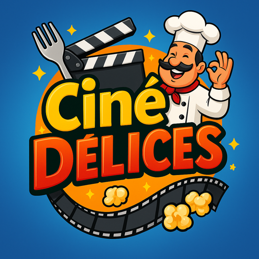
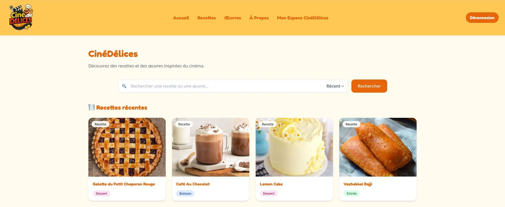
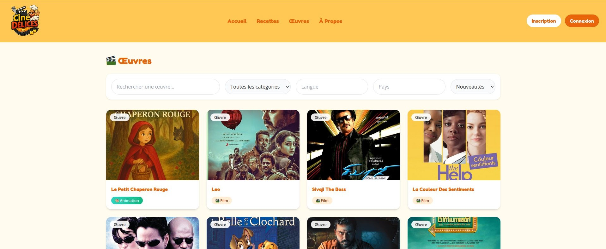
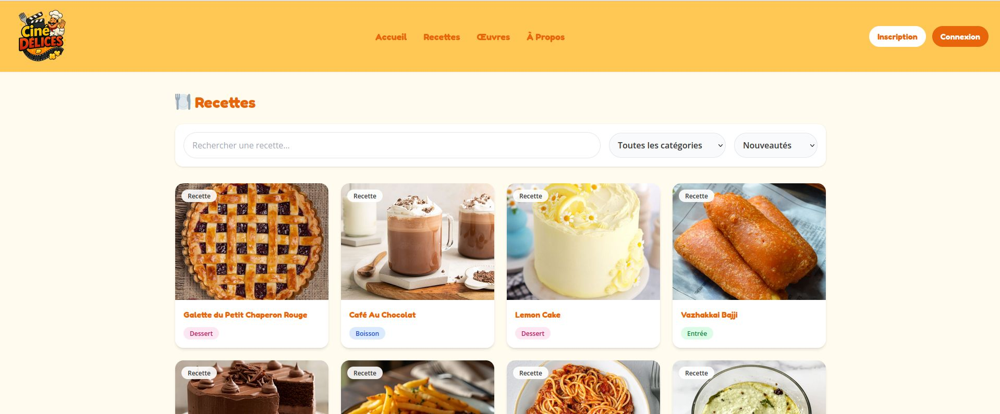
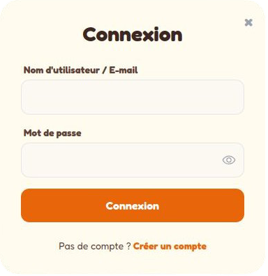
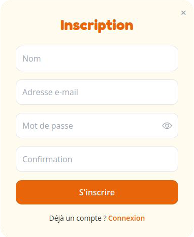
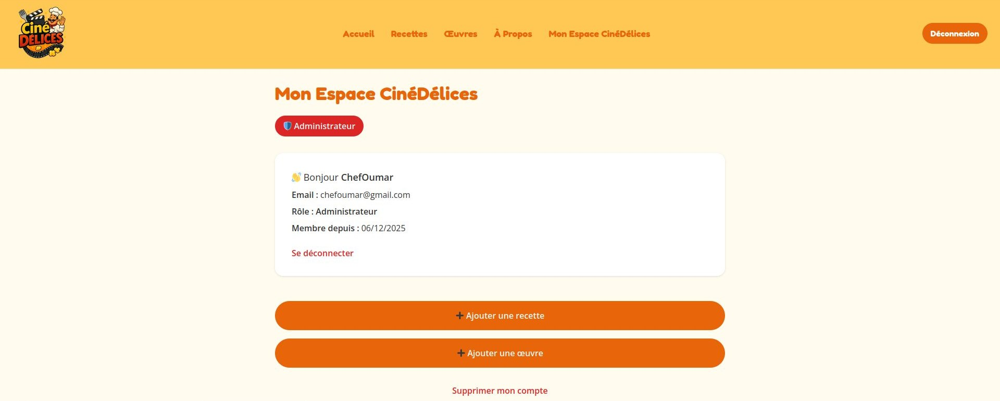
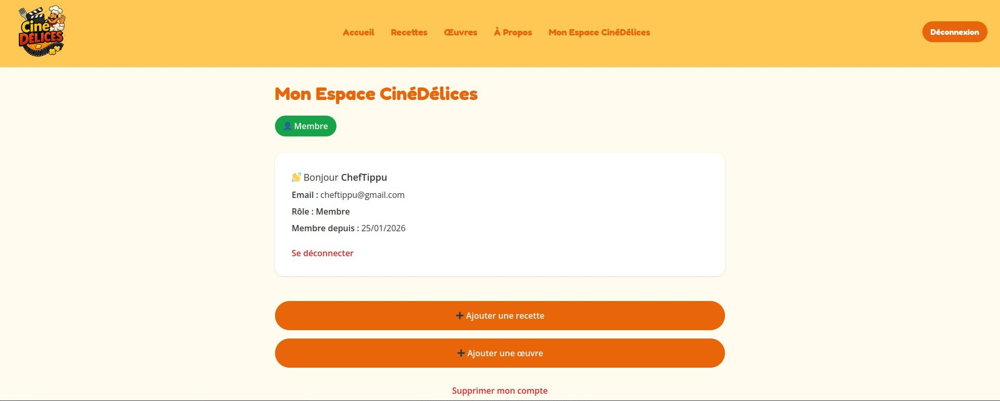
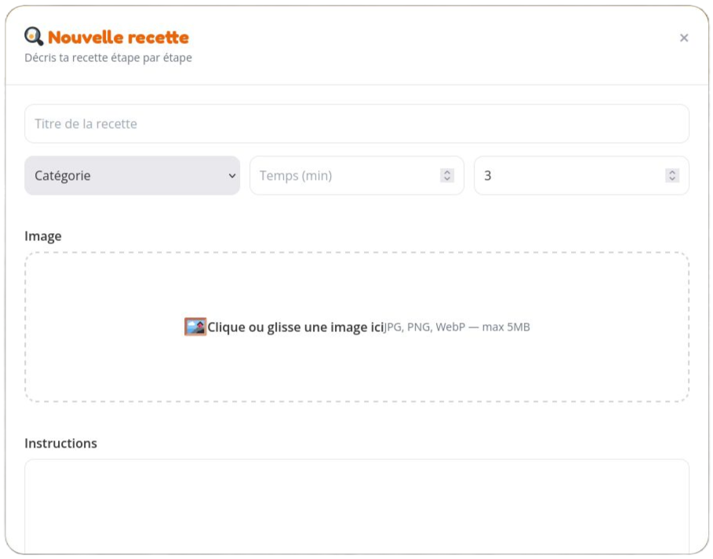
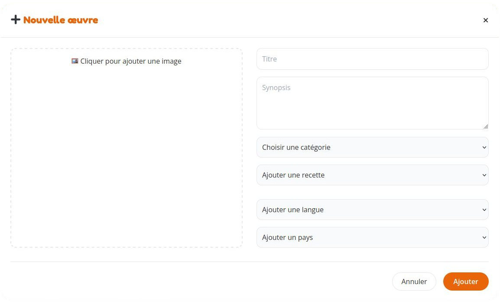

Formation O'Clock
J’ai intégré l’école O’Clock en 2025 afin de suivre la formation Développeur Web et Web Mobile (DWWM). Cette formation intensive est orientée vers la pratique professionnelle et la montée en compétences techniques.
Le rythme de la formation repose sur un travail quotidien soutenu, des exercices pratiques, des projets encadrés et une forte autonomie, reproduisant les conditions réelles du monde professionnel.

Déroulement de la formation
La formation O’Clock est structurée en plusieurs phases progressives, permettant d’acquérir des bases solides puis d’approfondir des technologies modernes utilisées dans le développement web.
- HTML et CSS : structure et mise en page des sites web
- JavaScript : programmation côté client
- Git et GitHub : gestion de versions et travail collaboratif
- Node.js et Express : développement back-end
- API REST : communication entre le front-end et le back-end
- React : développement d’applications web dynamiques (SPA)
- Projet fil rouge et soutenance finale (Apothéose)
Compétences acquises
Cette formation m’a permis de développer des compétences techniques, mais également des compétences méthodologiques et organisationnelles.
- Développement front-end avec React et JavaScript
- Développement back-end avec Node.js et Express
- Gestion de bases de données PostgreSQL avec Sequelize
- Conception et utilisation d’API REST
- Application du modèle MVC
- Travail en équipe, autonomie et gestion du temps
Projet Fil Rouge : CinéDélices

Le projet CinéDélices est une application web complète réalisée dans le cadre de la formation O’Clock.
Il permet d’associer des recettes culinaires à des œuvres (films, séries, mangas), avec un système complet de gestion des données.
🏠 Accueil

Recherche dynamique via API.
🎬 Œuvres

Catalogue avec filtres.
🍽️ Recettes

Données dynamiques.
🔐 Connexion

Authentification JWT.
📝 Inscription

Création de compte.
🛠️ Admin

CRUD complet.
👤 Utilisateur

Espace personnel.
➕ Recette

Upload image.
➕ Œuvre

Relation many-to-many.
Stage – RCAB Technologies
Dans le cadre de la formation O’Clock, j’ai effectué un stage au sein du centre de formation RCAB Technologies. Ce stage avait pour objectif de renforcer mes compétences pratiques en développement web.
Ce stage s’inscrivait dans une démarche pédagogique, avec la réalisation de travaux concrets et des mises en situation professionnelles.
🎯 Activités réalisées
- Création et personnalisation de sites web sous WordPress
- Mise en page et structuration avec Elementor
- Création de formulaires avec Forminator
- Intégration de contenus (textes, images, sections)
- Optimisation responsive (mobile, tablette, ordinateur)
🧠 Compétences développées
- Utilisation de WordPress dans un cadre pédagogique
- Notions d’UX / UI
- Organisation du travail et autonomie
- Respect des consignes et des délais